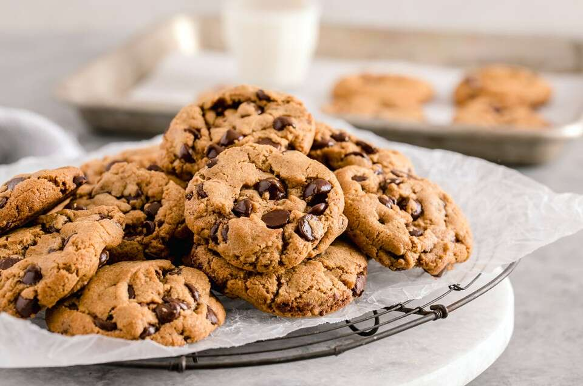

Chocolate Chip Cookies
Description
This recipe is everything you could ask for if you are someone that enjoys chocolate chip cookies. Following this recipe will produce dozens of cookies that have a slightly crispy texture on the outside, covering a much softer and chewy interior
I have personally made this recipe myself many times over. If you feel that you have any potential changes / optional things to add, shoot me an email at rosshamey@gmail.com and I will try it myself!